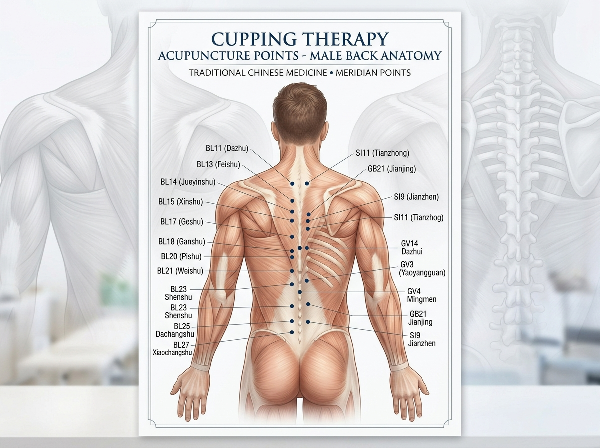
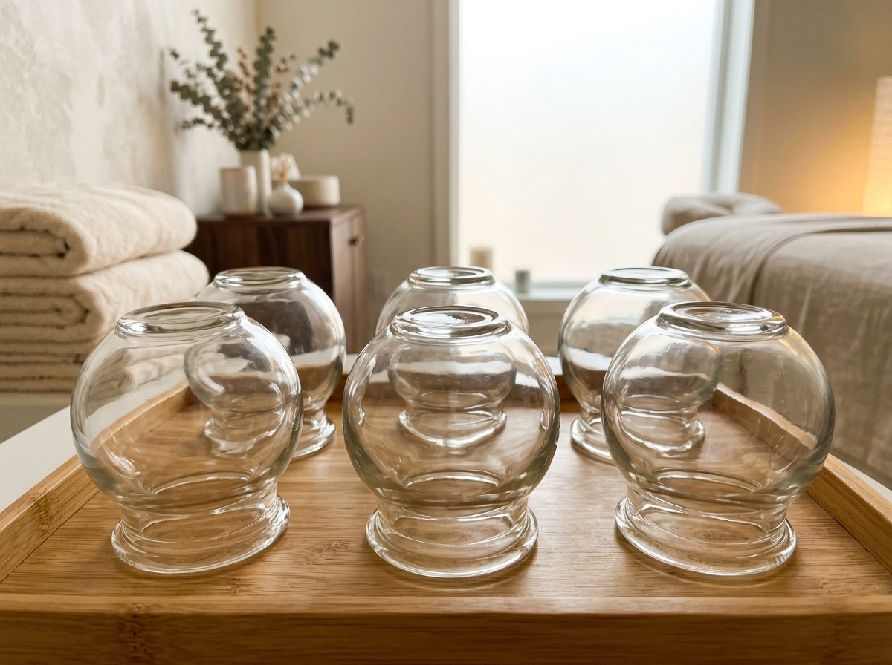

VÜCUDUNUZU DOĞAL YOLLARLA ŞİFALANDIRIN
Hacamatçı Mikail Hoca olarak, asırlardır şifa kaynağı olmuş kupa terapisini (Hacamat), modern hijyen standartları ve 10 yıllık kadim tecrübemiz ile birleştirerek uyguluyoruz.
Hacamat, vücuttaki kılcal damarlarda birikmiş, dolaşımı zorlaştıran toksik maddelerin, sentetik antibiyotik/ilaç kalıntılarının ve kirli kanın doğal cam bardak vakumlama yöntemi ile vücuttan uzaklaştırılması işlemidir. Amacımız sadece fiziksel arınma değil; zihinsel hafifleme ve bağışıklık sisteminizi güçlendirerek hayat kalitenizi artırmaktır.
« إِنَّ أَمْثَلَ مَا تَدَاوَيْتُمْ بِهِ الْحِجَامَةُ »
"Tedavi olduğunuz şeylerin en hayırlısı hacamattır." (Buhârî, Tıb 13; Müslim, Müsâkât 62)
Hangi Kupa Noktası Nereye Şifa Verir?
Hacamatçı Mikail Hoca’nın 10 yıllık kadim tecrübesiyle; sırt, omurga ve iç organ meridyenlerine göre uygulanan profesyonel kupa noktaları.

Kâhil & Kalp Noktası
İki kürek kemiği arası. Kanın ana istasyonudur; genel vücut bağışıklığını şahlandırır, kalp yükünü ve yüksek tansiyonu hafifletir.
Boyun & Ense Kökü
Kronik migren, baş zonklamaları, boyun düzleşmesi, sisli beyin ve göz tansiyonuna doğrudan ferahlık kapısıdır.
Karaciğer & Dalak
Sürekli içilen sentetik antibiyotik, ağrı kesici ve kimyasal ilaç tortularının hücresel düzeyde temizlendiği ana filtredir.
Akciğer & Aşı Noktaları
Ciğer hırıltısı, nefes darlığı, kronik öksürük ve omuz başlarındaki taşlaşmış ağır kulunçların boşaltıldığı yerdir.
Böbrek & Bel Boşlukları
Bel fıtığı sancıları, bel tutulması, ağır kaldırma spazmları ve böbrek filtrasyonunun desteklenmesinde etkilidir.
Kafa (Hâme) Noktası
Unutkanlık, vesvese, baş ağrısı ve psikolojik yorgunluklarda beyin kan dolaşımını canlandırarak zihne berraklık verir.
Hacamatın Kanıtlanmış Faydaları
Geleneksel Tıbb-ı Nebevi metodunun ve doğal ateşli cam bardak kupa uygulamasının metabolizma, damar yatağı ve bağışıklık sistemi üzerindeki bilimsel olarak kanıtlanmış 6 temel şifa basamağı:
DERİN TOKSİN TEMİZLİĞİ
Kan dolaşımını yavaşlatan ağır metalleri, kimyasal atıkları ve ödemleri vücuttan arındırarak detoks etkisi sağlar.
AĞRILARDA BELİRGİN AZALMA
Sırt, bel, boyun ağrıları ile migren ve eklem rahatsızlıklarında kasları gevşeterek hızlı rahatlama sunar.
KAN DOLAŞIMINI HIZLANDIRMA
Kılcal damarlardaki tıkanıklıkları açarak hücrelerin daha bol oksijen ve besin almasını sağlar.
BAĞIŞIKLIK GÜÇLENDİRME
Vücudun savunma hücrelerini (akyuvarları) uyararak hastalıklara karşı direncini en üst seviyeye çıkarır.
STRES VE UYKU KALİTESİ
Sinir sistemini sakinleştirir, kronik yorgunluğu azaltır ve derin, deliksiz bir uyku düzenine yardımcı olur.
HÜCRESEL YENİLENME
Dokulardaki eski ve işlevini yitirmiş kan hücrelerinin çekilmesiyle yeni, taze kan üretimini tetikler.

Neden Plastik Pompa Değil de Ateşli Cam Bardak?
Ateş aleviyle ısıtılan kalın cam bardak, uygulandığı bölgedeki kılcal damarları nazikçe genişletir; kas sertliğini çözer ve pıhtılaşmış koyu tortuları acısız bir şekilde çeker.
Sürekli Kullanılan Antibiyotik ve İlaç Tortularından Arının
Sentetik antibiyotikler ve ağrı kesici ilaç kalıntıları deri altı kılcal damarlarda depolanır. Doğal ateşli cam bardak hacamatı bu metabolitleri hücresel düzeyde dışarı alır.
Antibiyotik Kalıntıları
Antibiyotik tedavileri sonrasında bağ dokusunda kalan metabolitler, halsizlik ve sindirim durgunluğuna neden olur. Hacamat bu tortuları hücresel düzeyde dışarı alır.
Ağrı Kesici Toksisitesi
Sürekli alınan ağrı kesiciler sadece semptomu bastırır, damar yatağını temizlemez. Hacamat, kas düğümlerindeki laktik asidi ve iltihabi sıvıyı boşaltarak kökten rahatlatır.
Kronik Yorgunluk & Sisli Beyin
Kandaki ağır metaller ve çevresel kimyasallar beynin oksijenlenmesini engeller. Kafa ve kâhil seansları sonrasında sabahları zinde ve berrak bir zihinle uyanırsınız.
Doğal Cam Bardak Hacamatı Nasıl Uygulanır?
Muayene ve Nokta Tespiti
Şikayetiniz, tansiyonunuz ve nabzınız değerlendirilir; Kâhil, sırt, bel veya baş noktaları titizlikle işaretlenir.
Ateşli Cam Bardakla Isı Vakumu
Alev ısısıyla vakumlanan kalın cam bardaklar yerleştirilir. Ilık sıcaklık kas spazmlarını çözer ve doğal anestezi etkisi yapar.
Ağrısız Mikro-Çizikler (0.5 mm)
Sadece derinin en üst epidermis tabakasına tüy inceliğinde steril mikro kesiler atılır; kesinlikle derin acı hissedilmez.
Saf Sarı Kantaron Yağı ile İzsiz Bakım
Toksik kan boşaldıktan sonra cilt dezenfekte edilir ve saf kantaron yağı ile mühürlenir. 3 ila 5 günde sıfır izle iyileşir.
Hemen Gününüzü ve Müsait Seans Saatinizi Seçin
İstediğiniz tarihe tıklayın; canlı yeşil [MÜSAİT] saatlerden birini seçip randevunuzu oluşturun. Aldığınız randevuyu dilediğiniz an tek tıkla İptal Edip tekrar boş duruma getirebilirsiniz.
Eylül 2026 Rebiülevvel
Randevu günü için tıklayınızHicri 17 Rebiülevvel (Mevlid Ayı Şifası). Yılın en faziletli kupa vaktidir.
Seçtiğiniz tarih ve saat sistemde adınıza kilitlendi. Dilediğiniz an bu ekrandan iptal edebilirsiniz.
Hacamatçı Mikail Hoca'ya WhatsApp'tan Teyit AlMikail Hoca ile Şifa Bulan Danışanlarımızın Yorumları
Doğal cam bardak hacamatı ve ilaç detoksu yaptıran danışanlarımızın samimi tecrübeleri.
"Yıllardır boyun tutulması ve kronik sırt ağrısı çekiyordum. Mikail Hoca'nın doğal cam bardakla yaptığı seansından sonra sırtımdaki 50 kiloluk yük kalktı sanki. Gece ilk defa deliksiz uyudum, Allah razı olsun."
"Düzenli antibiyotik ve tansiyon ilaçları kullanıyordum, vücudum sürekli hantal ve yorgundu. İlk seanstan sonra sabahları kuş gibi uyanmaya başladım, resmen kanım tazelendi."
"Uzun yol tır şoförüyüm, belimde ve sağ bacağımda feci çekme oluyordu. Sünnet günü Kâhil ve bel bölgesine kupa attırdım. 2 aydır bacaklarımda en ufak sızı kalmadı, şoför arkadaşlara da tavsiye ettim."
"Bilgisayar başında 9 saat oturmaktan sol kürek kemiğim kaskatı kesilmişti. Ateşli cam bardağın o ılık sıcağı kaslarımı öyle bir açtı ki anlatamam. Kesinlikle plastik vakumla kıyaslanamaz."
"Şantiyede ağır kaldırınca belimi kilitledim. Mikail Hoca bel ve kuyruk sokumu bölgesine çok titiz çalıştı. Seans sonu sürdüğü saf kantaron yağı sayesinde 4 günde deride en ufak iz kalmadı."
"Her hafta sonu migren atağı geçirip karanlık odaya kapanırdım. Cankurtaran (kafa) hacamatı yaptırdım, 1 aydır tek bir ağrı kesici hap içmedim. Zihnim öyle berrak ki anlatamam."
Merak Edilenler & Hacamat Esasları
Hacamat yaptırırken canım acır mı? Kesikler derin mi atılır?
Kesinlikle derin kesi yapılmaz. Hacamatçı Mikail Hoca 10 yıllık ustalığı ile sadece derinin en üst epidermis katmanına 0.5 milimetrelik mikro-çizikler atar. Doğal ateşli cam bardağın ılık sıcaklığı kası gevşettiği için duyulan his sinek ısırığından farksızdır.
Sırtımda veya cildimde iz kalır mı?
Kalıcı hiçbir iz kalmaz. Seansın hemen ardından sürülen saf sarı kantaron yağı hücre yenilenmesini hızlandırır; minik çizgiler 3 ila 7 gün içinde tamamen kaybolarak cilt pürüzsüzleşir.
Sürekli antibiyotik ve ilaç kullanıyorum, hacamat fayda eder mi?
En çok fayda görecek grup ilaç kullananlardır. Böbrek ve karaciğerin atamadığı kimyasal kalıntılar kılcal damarlarda depolanır. Hacamat, bu toksik çökeltileri doğrudan dışarı alarak vücudu hücresel düzeyde ferahlatır.